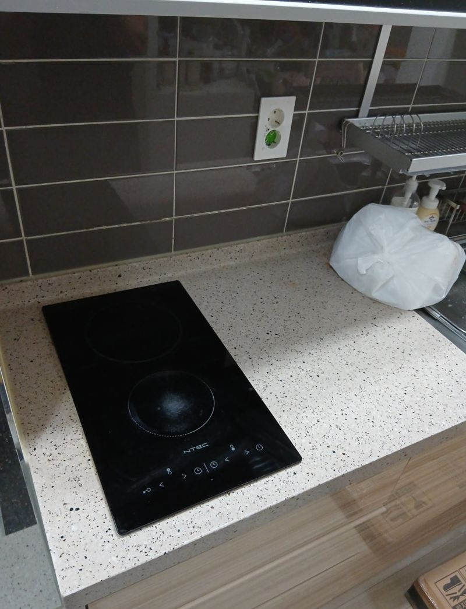
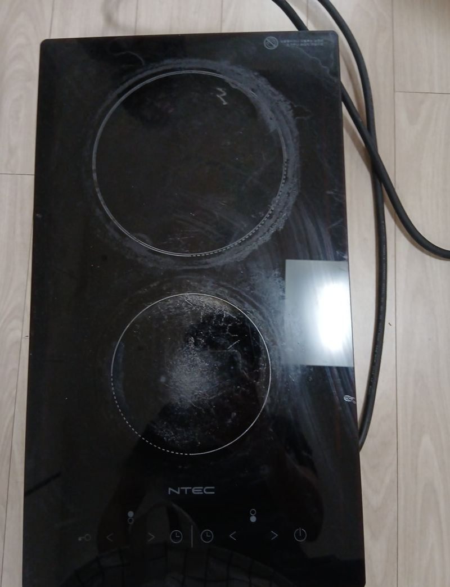
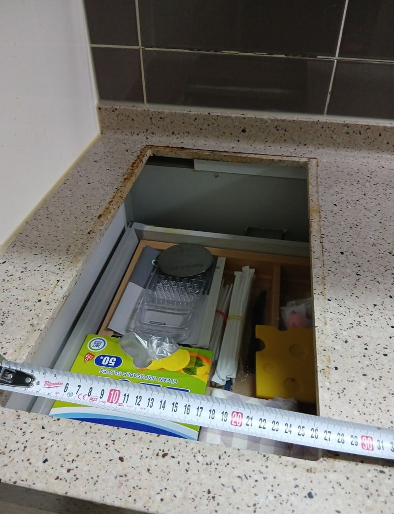
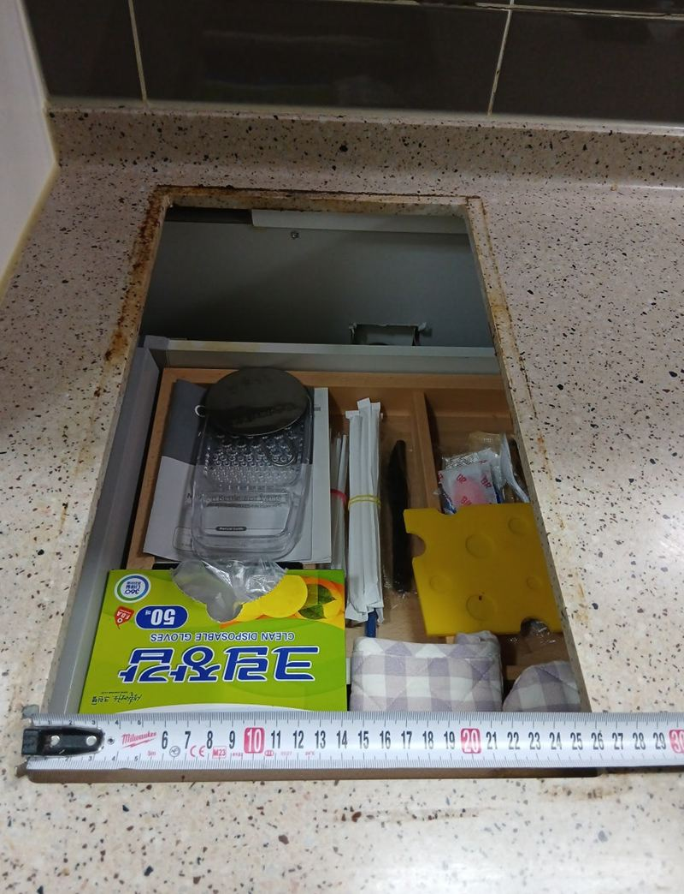
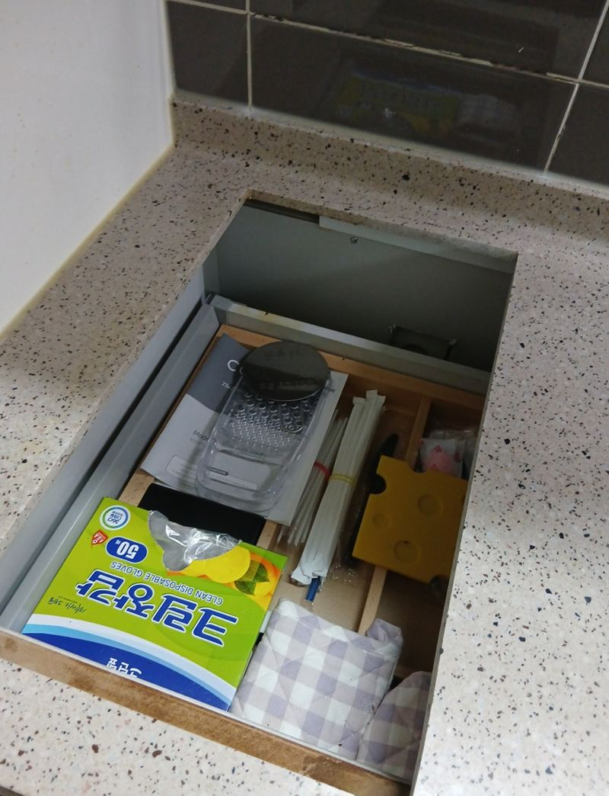
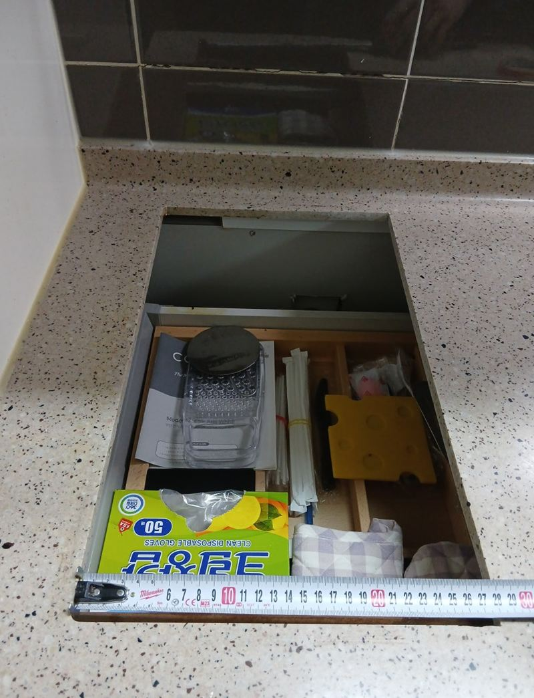

남양주 2구 하이라이트 크기 확장 교체 방법
← 밀어서 전후 비교 →
"2구 하이라이트가 퍽 소리 나면서 꺼지더니 안 켜져요. 세입자 들어오기 전에 바꾸고 싶어요." 남양주 다산동 오피스텔 집주인분의 연락이었어요. 차단기와 누전부터 확인했지만 제품 자체 고장이었어요. 새로 고른 제품은 기존보다 조금 커서, 원래 대리석 구멍으로는 들어가지 않았어요. 실측으로 넓힐 범위를 표시하고, 주변을 덮은 뒤 다이아몬드 톱날로 구멍을 매끄럽게 넓혀 새 하이라이트를 앉혔어요.
| 현장 | 남양주 다산동 오피스텔 주방, 세입자 입주 전 |
|---|---|
| 증상 | 퍽 소리와 함께 꺼진 뒤 작동 안 함 |
| 한 일 | 차단기·누전 확인 → 옛 제품 탈착 → 새 제품 크기 실측·컷팅 범위 표시 → 보양 → 다이아몬드 톱날 컷팅 → 설치·배선 정리 → 작동 확인 |
| 이유 | 새 제품이 기존보다 커서 상판 구멍 확장 |
새 제품이 구멍보다 클 때
같은 2구라도 만든 회사와 모델마다 가로·세로가 달라요. 새 제품이 기존 구멍보다 작으면 틈을 메우면 되지만, 크면 대리석을 더 잘라야 해요. 이 집처럼 기존보다 조금 큰 제품을 고른 경우엔 구멍을 넓혀야 했어요.
구멍을 넓히는 건 상판을 자르는 일이라 되돌릴 수 없어요. 그래서 새 제품 설명서의 타공 치수를 기준으로 몇 번이고 재서 선을 그었어요. 1~2mm만 넘쳐도 테두리 사이로 틈이 보여요.


대리석 구멍 넓히는 순서
실측과 표시
새 제품 크기에 맞춰 넓힐 범위를 줄자로 재고 상판에 표시했어요.


보양
자를 때 돌가루와 파편이 튀어요. 상판과 주변 가구를 덮개로 꼼꼼히 덮었어요.
다이아몬드 톱날 컷팅
대리석이 깨지지 않게 다이아몬드 톱날로 천천히 잘라 단면을 매끄럽게 했어요.


설치와 시험
새 하이라이트를 구멍에 끼우고 배선을 정리해 고정한 뒤, 전원을 연결해 작동을 확인했어요.
집주인분은 "대리석을 자른다고 해서 걱정했는데 먼지 하나 없이 깨끗하게 끝났고, 쓰는 법까지 설명해 줘서 좋았다"고 하셨어요.
하이라이트 교체 신호
- 퍽 소리와 함께 꺼짐안쪽 열선이 끊어졌거나 회로가 상했을 가능성이 커요.
- 열이 제대로 안 오름열선이 낡아 예전만큼 데우지 못해요.
- 한쪽 화구만 안 됨해당 화구 부품이 고장 났어요.
하이라이트는 어떤 냄비든 쓸 수 있고 잔열로 요리를 이어 갈 수 있어요. 인덕션은 전용 냄비가 필요하지만 더 빨리 데워요. 세입자가 바뀌는 오피스텔이라면 어떤 냄비든 쓰는 하이라이트가 무난해요.
임대 오피스텔이라면 이렇게
세입자가 바뀌기 전에 주방 가전을 미리 점검해 두면 입주 후 연락을 받을 일이 줄어요. 하이라이트처럼 매일 쓰는 제품은 한 번 켜 보고, 화구마다 열이 오르는지 확인해 보세요.
새 제품을 고를 때 지금 구멍 크기에 맞는 모델을 먼저 찾으면 상판을 자를 필요가 없어요. 원하는 모델이 조금 크다면 이번처럼 구멍을 넓히면 되니, 고르기 전에 모델명을 알려주시면 가능한지 먼저 봐 드려요.
하이라이트 크기 확장 질문
넓히지 않고 같은 크기 제품을 찾을 수는 없나요?
같은 치수 제품이 있으면 그게 가장 간단해요. 모델 선택이 좁아질 뿐이에요.
구멍을 넓히면 상판이 약해지지 않나요?
양옆 상판 폭이 충분하면 괜찮아요. 너무 얇게 남으면 보강을 해요.
잘린 단면이 보이나요?
제품 테두리가 덮어 거의 보이지 않아요.
세입자 입주 날짜가 급해요.
제품이 준비돼 있으면 일정 맞추기가 쉬워요. 모델명을 미리 알려주세요.
1구를 2구로 바꿀 수 있나요?
상판 폭과 전기 용량이 되면 구멍을 넓혀 가능해요.
쓰던 제품은 가져가 주나요?
요청하시면 떼어 낸 제품을 수거해요.
넓힌 구멍에 나중에 작은 제품을 넣으면요?
남는 틈을 덮는 테두리 판이나 메움 작업이 필요해요. 그래서 처음 고를 때 크기를 잘 보는 게 좋아요.
다른 인덕션·하이라이트 현장
지금 제품 윗면과 새로 살 모델명을 알려주세요.
전화 상담 010-4517-9872